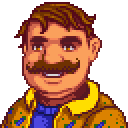
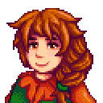
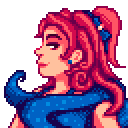
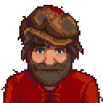
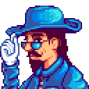

HISTORIA
Tras años de agotador trabajo en la corporación Joja, decides abrir la carta de herencia que te dejó tu abuelo. En ella, descubres que eres el nuevo dueño de una vieja granja en el pintoresco y tranquilo Pueblo Pelícano. Al mudarte, te encuentras con un terreno descuidado que deberás limpiar y cultivar para devolverle su antigua gloria. Tu llegada coincide con el declive del pueblo, por lo que tu misión será restaurar el Centro Cívico y la unión vecinal. A través de la agricultura, la minería y la amistad, transformarás tu vida gris en una llena de propósito y naturaleza. Es, en esencia, un viaje de redescubrimiento personal y resistencia frente al avance del consumismo corporativo.
OPINIÓN

Opinión personal sobre el juego
Si buscas una experiencia de juego tranquila y divertida Stardew Valley es tu juego. Te da un abanico de posibilidades enorme, puedes pasar el día cultivando, pescando, bajando a la oscura mina o tomando unas cervezas con los aldeanos en la taberna. Además, la experiencia multijugador de este juego permite que esa diversion se multiplique exponencialmente al poder tener la granja de tus sueños junto a tus amigos.
Le pongo de nota un 10/10 por las increíbles historias de sus personajes y los buenos ratos que me ha hecho pasar junto a mis amigos.
PERSONAJES

Sebastian
Sebastian es un rebelde y serio solitario que vive en el sótano de sus padres. Es el medio-hermano mayor de Maru, y siente que ella se lleva toda la atención y adoración, mientras él es dejado a podrirse en la oscuridad. Tiende a ser absorbido profundamente por juegos de computadora, cómics, y novelas de ciencia ficción, y pasará grandes cantidades de tiempo realizando estos pasatiempos solo en su cuarto. Puede ser un poco antipático hacia personas que no conoce.
Shane
Shane es un aldeano de Pueblo Pelícano que suele ser grosero e infeliz, sufre depresión y dependencia del alcohol. Sin embargo, su actitud empieza a cambiar hacia cualquier jugador que decida hacerse amigo suyo. Trabaja en el MercaJoja la mayoría de los días entre las 09:00 y las 17:00, a menos que el Centro Cívico esté terminado, y suele pasar las tardes en el Salón Fruta Estelar. No trabaja los fines de semana, excepto los días de lluvia, y suele estar por el rancho.

Abigail
Abigail vive en la tienda local con sus padres. Algunas veces discute con su mamá, quien se preocupa por su estilo de vida "alternativo". Su madre dice lo siguiente: "Me gustaría que Abby se vistiera más apropiadamente y dejara de teñirse el cabello de azul. Ella tenía un color de pelo natural tan maravilloso, igual al que tenía su abuela. Oh, y desearía que encontrara algunos intereses más sanos en lugar de esos disparates del ocultismo." Podrás encontrar a Abigail sola en el cementerio o quizás en la lluvia buscando ranas.

Penny
Penny vive con su mamá, Pam, en una pequeña caravana junto al río. Mientras Pam está emborrachándose en el bar, Penny silenciosamente intenta hacer sus deberes en la oscura y desordenada habitación que esté forzada a llamar hogar. Ella es modesta y tímida, sin grandes ambiciones por la vida aparte de sentar cabeza y empezar una familia. A ella le gusta cocinar (pero sus habilidades en la cocina son cuestionables...) y leer libros en la biblioteca local.

Gus
Gus es un aldeano que vive y trabaja en el Salón Fruta Estelar en el Pueblo Pelícano. Él es dueño del establecimiento.

Krobus
Krobus es el único monstruo amistoso que encontrarás. Él es una Bestia de las sombras que vive en las cloacas porque es muy sensible a la luz solar para ir afuera durante el día. Él vende una variedad de mercancía.

Leo
Leo es un niño que inicialmente vive en la Isla Jengibre. Sus padres se perdieron en el mar y él considera a los loros que habitan la isla como su familia. Al principio es muy tímido para hablarle al jugador, hasta que el jugador se "hace amigo" de los loros de la isla dandoles nueces doradas.

Marnie
Marnie es una aldeana en Stardew Valley. Ella reside en el Rancho de Marnie en el área noreste del Bosque Tizón, cerca a la entrada sudoeste del Pueblo Pelícano.
Marnie tiene su propio negocio en el rancho desde las 9:00 AM hasta las 4:00 PM todos los días, excepto los lunes y martes (pero el rancho sigue abierto esos días). Ella vende animales y suplementos para ellos.

Pierre
Pierre es un aldeano que vive en el Pueblo Pelícano. Él es dueño de la Tienda local Pierre's, donde también atiende el negocio.

Robin
Robin es una aldeana en Stardew Valley. Ella reside en la Carretera de la Montaña, 24, en el Pueblo Pelícano, con su esposo Demetrius, hija Maru e hijo Sebastian.
Robin es la carpintera del pueblo y es dueña de su propia Carpintería, en su casa, desde las 9:00 AM hasta las 5:00 PM todos los días, excepto los jueves, y una parte del viernes (cierra temprano).

Sandy
Sandy es una aldeana que vive en el Desierto de Calico donde es dueña del negocio Oasis. Los jugadores(a) no la conocerán hasta que hayan completado el lote para reparar el autobús hacia el desierto..

Willy
Willy es un aldeano que creció viajando entre las Islas Helecho, y ahora vive al sur del Pueblo Pelícano, en La Playa. Él vende cebo y suministros de pesca en su tienda. Su tienda está abierta todos los días, pero estará cerrada los sábados si el clima es lo suficientemente bueno para ir a pescar.

Gunther
Gunther es un aldeano, conservador del museo de Pueblo Pelícano.
El no acepta regalos para aumentar el nivel de amistad. En su lugar, acepta donaciones para el museo, recompensando a los jugadores(as) por alcanzar ciertos objetivos, según el número de donaciones.

Morris
Morris es un aldeano que trabaja en el MercaJoja, en Pueblo Pelícano. Él es el gerente y también actúa como el representante de servicio a cliente. Él te ofrecerá una membresía de MercaJoja por 5000 de oro. Si el jugador(a) elige comprar esta membresía, un Almacén de Joja reemplazará al abandonado Centro Cívico.
Si el jugador(a) completa el Centro Cívico, el MercaJoja local queda fuera del negocio y Morris abandona el pueblo

Señor Qi
El Señor Qi es un misterioso desconocido, quien es encontrado por primera vez por el jugador(a) cuando pone una pila dentro de una caja de seguridad en el túnel. Él está relacionado con la caja vacía que se encuentra en la estación de tren.
Él opera el casino que está localizado detrás de la tienda de Sandy, en el Desierto de Calico. Para tener acceso al casino, el jugador(a) debe completar la secuencia de misiones "El misterioso Qi". Después de completar las misiones, el Matón se moverá a un lado para permitirte el acceso. El Señor Qi puede ser encontrado dentro del casino cuando esté abierto.
También és el propietario de la Habitación de nueces del Señor Qi.